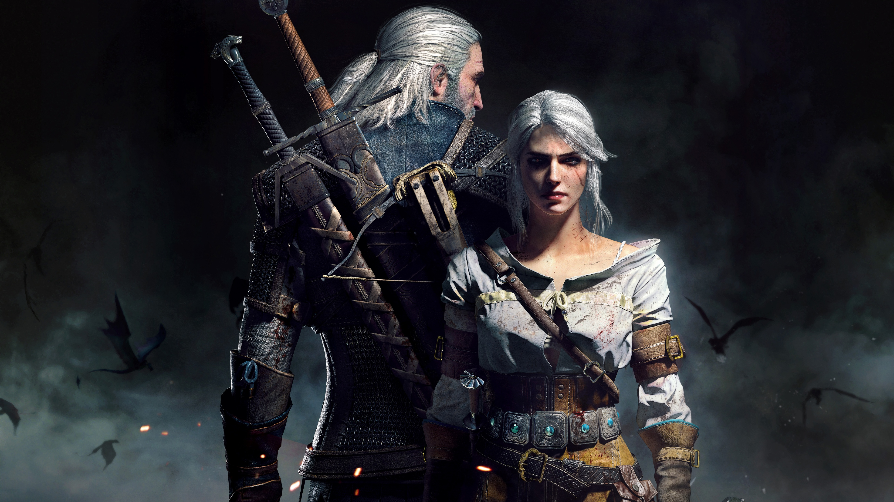
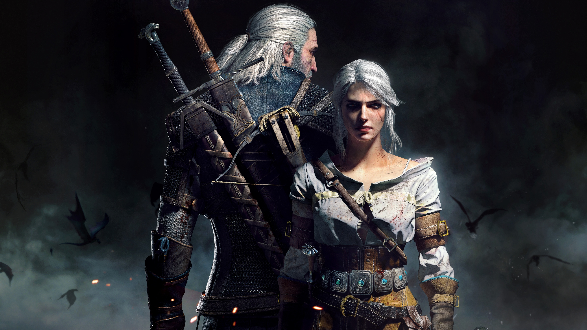

ABOUT GAMING
Gaming is more than just pressing buttons — it's stepping into worlds where anything is possible. From epic battles and high-speed races to emotional stories that hit deep, games let us live a thousand lives in one. It's where skill meets imagination, and where every level conquered, every boss defeated, and every story completed feels like a personal triumph. Whether you're grinding ranked matches, exploring vast open worlds, or just escaping reality for a while, gaming connects us to something bigger — a shared passion, a digital culture, a second home. This page is a tribute to that love — to every game that's made us cheer, rage, cry, or stay up way too late. Welcome to the journey.
We're embracing these changes with you, and we've reinvented our products to meet the moment.

 
